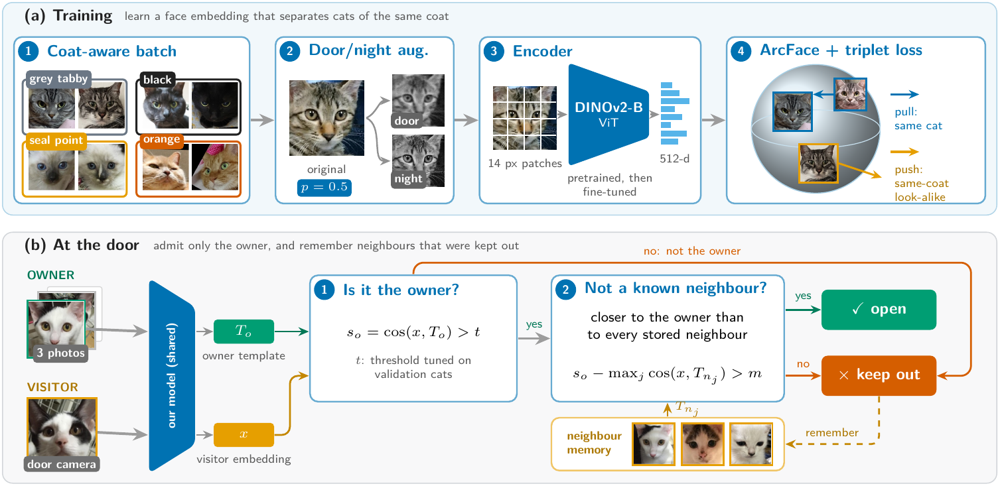

Front door
Who's at the door?
Enrol your cat
Take one to three photos of your cat's face, looking at the camera. They are averaged into the owner template, exactly as the door does it. Photos stay on this computer.
Your own cat needs the live server
This page is running without the models, so it can only show the sample homes. Start the demo server on a computer that has the weights, then open it as localhost so the browser allows the camera:
python demo/server.py --port 8123Then open http://localhost:8123. The steps are in demo/README.md.
At the door
Who comes to the door
Adjust the doorsEnrolment photos, neighbour memory, face model and rule for each door
Owner's enrolment photos
Tap a photo to leave it out of the template.
Neighbour memory
The two doors
WhoCat / How it works
How the door decides

The face model
DINOv2-B, fine-tuned on 113,592 PetFace cats with ArcFace and a batch-hard triplet loss. Every training batch is filled with groups of cats that share a coat, so the model has to learn the face and not the fur colour. Half of the photos are degraded to look like a door camera or a night shot; without that, same-coat batches teach the model to tell photos apart by their lighting.
The door rule
The owner's enrolment photos are averaged into one template. A visitor gets in only if it matches the owner above a threshold tuned on look-alike cats, and matches the owner better than every neighbour the door has kept out before. The threshold and margin come from other validation homes; the sample homes here were never used to tune them.
What “Threshold only” shows
This is what a product team would usually ship: one threshold set so that 1% of random strangers get in. On look-alike neighbours that lets in about one visit in five, for every model we tested. Switch between the two rules on the front door to see it happen.
WhoCat / Results
Results on unseen cats
Verification, by kind of stranger
| Model | AUC, official pairs | Random | Same coat | Look-alike | Look-alike, door | Look-alike, night |
|---|---|---|---|---|---|---|
| MegaDescriptor-L | 88.23 | 45.4 | 32.5 | 18.1 | 4.9 | 3.6 |
| DINOv2-B, frozen | 95.58 | 64.6 | 46.5 | 26.6 | 10.6 | 14.3 |
| PetFace ResNet-50 | 97.71 | 86.7 | 79.0 | 59.1 | 31.9 | 31.3 |
| WhoCat (ours) | 98.44 | 91.8 | 88.4 | 74.1 | 65.1 | 70.3 |
| WhoCat small (MobileNetV3) | 97.95 | 87.1 | 79.9 | 57.6 | 42.9 | 51.0 |
The whole door, one decision at a time
3,593 validation homes, each visited by its owner and three look-alike neighbours.
| Door | Owner visits let in | Look-alike visits let in | Owner, door camera |
|---|---|---|---|
| PetFace model, threshold on random cats | 85.6% | 20.3% | 60.4% |
| Our model, threshold on random cats | 92.0% | 20.1% | 86.2% |
| + threshold tuned on look-alikes | 73.5% | 1.04% | 58.8% |
| + neighbour memory | 72.3% | 0.27% | 58.0% |
| + 3 enrolment photos (full door rule) | 82.3% | 0.39% | 64.9% |
| PetFace model with the full door rule | 67.7% | 0.46% | 23.4% |